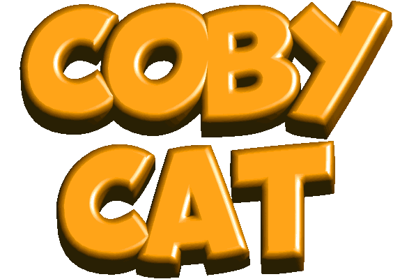
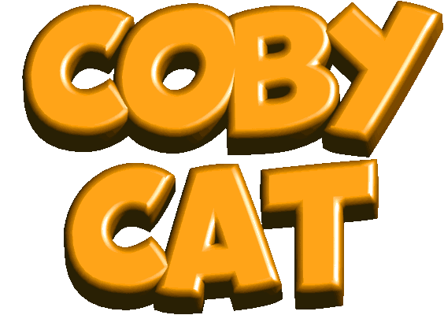

What's this?
The button wall has a different purpose than my organized directory of links. Here I link to sites I find cool, mostly on an aesthetic level. Also directories or webrings I belong to, comrades in the web revival, and whatever else I feel like.
This was initially more of an actual wall, but as I have come to value contextualizing links more, this has changed. I hope this change will also encourage you to actually seek out these sites. I'll do this more in-depth than my regular link list, even sometimes highlighting specific pages, because these are mostly personal pages that can vary wildly in subject matter.
I probably forgot some people (mea culpa). This non-exhaustive list is a subpage of my Links page.
Take this handy button if you want to link back:
There's also a static button in case you, like me, also cater to people who rather avoid animations on the web.